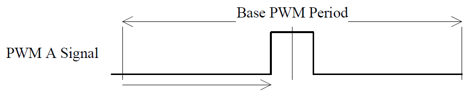
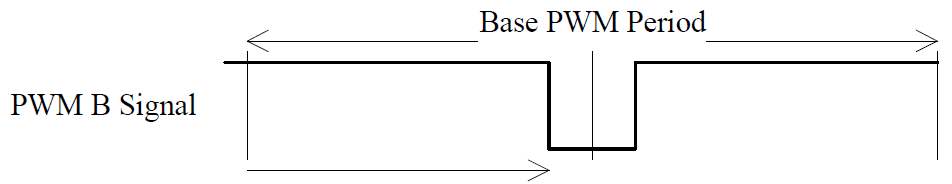
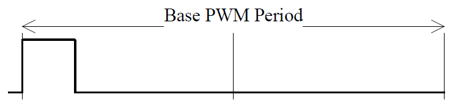
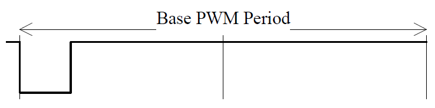
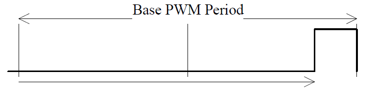
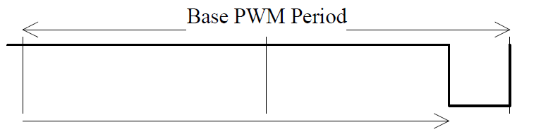
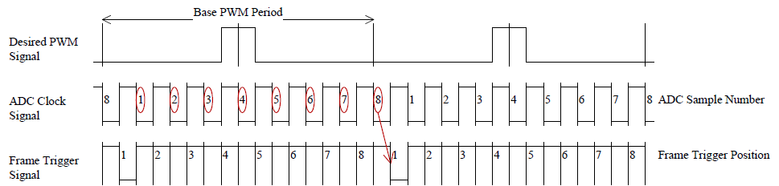

I/O Sync and PWM Generation
I/O Sync and PWM Generation — The PWM generation driver block allows for synchronization with selected analog I/O modules and configures the PWM generation on the configurable I/O module
Description
The I/O Sync and PWM (Pulse Width Modulation) Generation code module provides the following functionality:
Symmetric PWM generation for user signals with dynamic duty cycle adjustment
Dead band compensation
Dedicated PWM channels to output synchronization signals for IO106 and IO132-IO135 Speedgoat Analog modules
![[Important]](images/important.png) | Important |
|---|---|
If you are using two blocks, the same channel must not be used twice. If a different configuration for other channels is required, you must use an additional driver block in your model. This will not, however, guarantee that the channels are synchronized. You should use a single PWM block in your model if the PWM signals must be synchronized; for example, if you need to control a three-phase inverter, you should use a single block for the three channels, rather than using three separate blocks (one for each channel). If separate blocks are used, the FPGA registers are updated at different times (separate PCI write operations, without latching), resulting in different PWM update times. |
Ports
This driver block has one input port and contains no output ports.
- PWM DC
The duty cycle to apply on the different PWM signals (values between 0.0 and 1.0). This input is commonly a vector signal of the size of the active PWM channels.
Parameters
- Configurable I/O Module ID
This parameter associates a code module block with a configurable I/O module setup block. Set this value to match the Module ID defined in the setup block of the required configurable I/O module.
- Number of user PWM channels
Select the number of active user PWM channels to be used together with the synchronization signals. This number added to the number of sync channels should not exceed the total number of available channels. When using synchronization with the IO106, only the first PWM channel will be used for sync signals. When using synchronization with the IO132-IO135 family, the first three PWM channels will be used for sync signals. Note that the selected number of user channels will follow the sync signals in an ascending order. If your model contains another PWM block with the same module ID, make sure to not use any channel twice.
- Sample Time
Defines the base sample time at which this driver block gets its sample hit. This parameter can also be set to -1 for inherited sample time. The units are in seconds.
- Desired base PWM period (s)
Defines the base PWM period in seconds. All the generated PWM signals of the block will try to conform to this period length.
- Effective base PWM period (s)
This field displays the actual base PWM period in seconds. If the desired PWM period cannot be output exactly, the value of the actual PWM base period will be rounded to the nearest possible value.
- Duty cycle alignment
Defines how the base PWM signal is aligned. There are three possibilities:
Center-aligned
In this case, the PWM impulse is located at the middle of the base period length


Left-aligned
In this case, the PWM impulse is located at the start of the base period length


Right-aligned
In this case, the PWM impulse is located at the end of the base period length


- Deadband Duration Vector
Defines how a rising edge on PWM A and on PWM B output is canceled. The deadband mechanism forces low A/B output until the Deadband Duration is complete. The units are in seconds. The I/O Sync and PWM Generation only accepts a scalar value, valid for all elements of the Channel Vector.
- Enable the Second Update at Half of the PWM Period
Updates the PWM parameters (A, B and C-On and -Off values) at the halfway point of the PWM period. The PWM period is always updated once at the start of the period.
![[Note]](images/note.png)
Note This parameter is no longer visible in PWM 5.7 and subsequent versions.
- I/O module family
Use this drop down menu to select which Sync format you would like to output on the sync channels.
- Sampling mode
Single sample per period
In this mode, only one sample is triggered per base sample period. The Sample position dropdown menu allows you to select the position of that single sample. Possible selections are: Start of base PWM period and Middle of base PWM period.
Multiple samples per period
In this mode, multiple samples can be triggered per sample period. Adapt the number with the help of the Number of samples edit field. If I/O module family IO132-IO135 is selected, you can additionally define on which sample the frame should be triggered, by specifying a number between 1 and the Number of samples value, in the Frame trigger position edit field.

Depicted above is an example of a setting of Number of samples = 8 and Frame trigger position = 1.
- Recommended settings
At the bottom of the Intermodule sync tab, the recommended timing settings for the selected Analog module are listed, based on the settings defined in the PWM generation and Intermodule sync tab.
- Trigger Duration Vector
The duration of a trigger pulse in seconds. This duration can be different from channel to channel, but the duration is the same for each trigger selected within one channel. The width of this vector must be equal to the width of the Channel Vector parameter.
| Note |
|---|---|
The PWM C and triggers share the same I/O line: the triggers and the PWM C output are OR wired and then applied to the I/O line of the configurable I/O module. More than one trigger option can be selected at the same time. |
- Generate a Trigger at Period Start
When enabled, the PWM code module will emit one trigger pulse when the period starts.
- Generate a Trigger at Half of the Period
When enabled, the PWM code module will emit one trigger pulse when the PWM generation reaches the middle of the defined PWM period.
- Generate a Trigger at A-On
When enabled, the PWM code module will emit one trigger pulse when the PWM generation reaches the value of A-On. If the rising edge of the PWM A output is delayed because of the Deadband Duration, the trigger is still generated at A-On as defined by the user and not when the signal effectively changes its level.
- Generate a Trigger at A-Off
When enabled, the PWM code module will emit one trigger pulse when the PWM generation reaches the value of A-Off.
- Generate a Trigger at B-On
When enabled, the PWM code module will emit one trigger pulse when the PWM generation reaches the value of B-On. If the rising edge of the PWM B output is delayed because of the Deadband Duration, the trigger is still generated at B-On as defined by the user and not when the signal effectively changes its level.
- Generate a Trigger at B-Off
When enabled, the PWM code module will emit one trigger pulse when the PWM generation reaches the value of B-Off.
| Note |
|---|---|
Values expressed in seconds will be rounded to the FPGA resolution. For instance, if the FPGA base clock is equal to 75 MHz, then the resolution is 13.33 ns. |